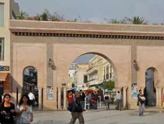
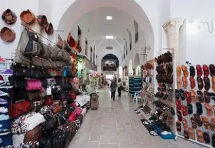
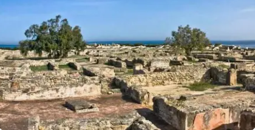
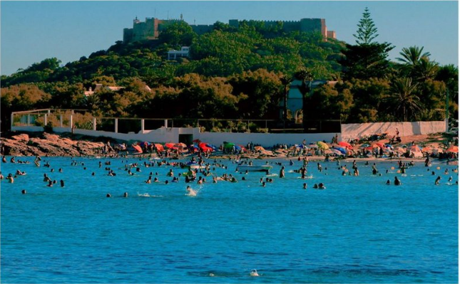

La Capitale du Cap Bon

Nabeul est un gouvernorat situé au nord-est de la Tunisie, occupant la majeure partie de la péninsule du Cap Bon. C'est une région côtière réputée pour ses plages, son agriculture et son artisanat.
La ville de Nabeul, chef-lieu du gouvernorat, est célèbre pour sa poterie traditionnelle, son marché du vendredi animé et ses plantations d'agrumes et de fleurs. Elle est surnommée "la ville des orangers".
Le gouvernorat se distingue par sa fertilité exceptionnelle, ses stations balnéaires prisées comme Hammamet, son patrimoine punique et romain, et son artisanat de renommée internationale.
Capitale tunisienne de la poterie et de la céramique, avec ses ateliers artisanaux produisant des pièces décoratives traditionnelles colorées et de grande qualité.
Station balnéaire internationale parmi les plus célèbres de Méditerranée, avec ses plages de sable fin, sa médina fortifiée et ses hôtels de luxe.
Région agricole la plus fertile de Tunisie, produisant agrumes, raisins, tomates, fleurs et plantes aromatiques. Le Cap Bon est le jardin de la Tunisie.
Le célèbre marché hebdomadaire de Nabeul, l'un des plus grands et authentiques de Tunisie, offrant artisanat, produits locaux et ambiance traditionnelle.

Médina fortifiée du XVe siècle entourée de remparts impressionnants. Sa kasbah dominant la mer Méditerranée offre une vue spectaculaire. Hammamet a inspiré de nombreux artistes dont Paul Klee.

Unique ville punique intacte au monde, classée UNESCO. Site archéologique exceptionnel du IVe siècle av. J.-C. avec ses maisons, thermes et sanctuaires remarquablement préservés.

Impressionnante forteresse byzantine du VIe siècle perchée sur un promontoire rocheux à 150 mètres d'altitude. Elle offre une vue panoramique extraordinaire sur la mer et le port de pêche.